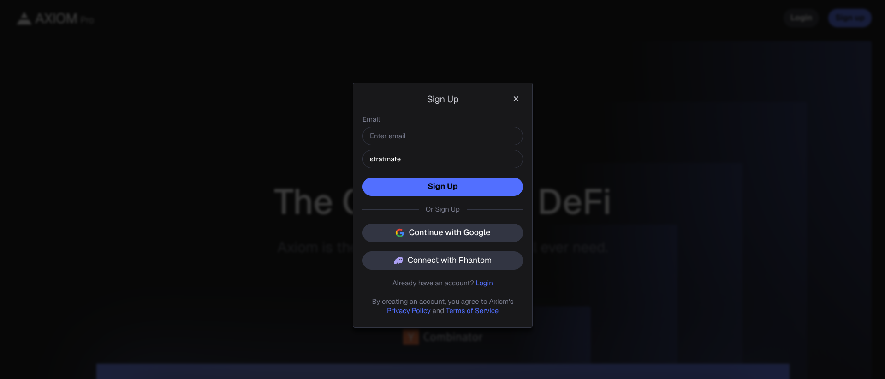
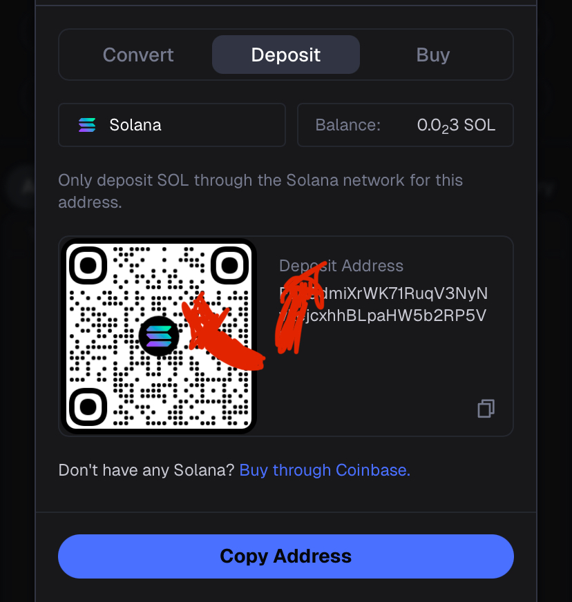

Para registrarte en AxiomPro directamente, puedes entrar desde aquí.
Aqui te enseñare a cómo utilizar el bot de AxiomPro correctamente de manera simple y sencilla.
Cómo registrarse:
Registarse en Axiom solo toma pocos pasos...
Primero de todo, entra en el enlace de aquí para así obtener el ansiado -10% menos en comisiones junto a recompensas adicionales. Ahí te registraras con tu correo, cuenta de Google o de incluso Phantom.
Y así de fácil puedes empezar a utilizar todas las funciones de AxiomPro junto a su bot.
Cómo depositar SOL:
Al terminar el registro tendras que depositar solana para poder empezar.
Desde ahí puedes comparar directamente solana en la pestaña "Buy" o incluso en la pestaña "Deposit" puedes obtener Solana desde cualqiuer aplicación como Phantom copiando el enlace y pegandolo en la otra plataforma.
Una vez depositavo ya puedes continuar, más tarde podras volver a depositar o intercambiar a €.